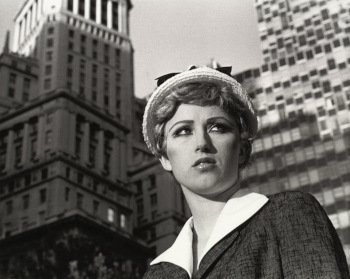

Untitled Film Still #21
Cindy Sherman · 1978 · Black-and-white photograph · Museum of Modern Art, New York
In copyright. Look and learn: shown for study, not for download.
Sherman started the series as a college student in Buffalo, New York, and moved to New York City in the summer of 1977, where she worked as a gallery assistant and receptionist at Artists Space. She is the model in every picture. She left the images untitled; the numbers were assigned by her gallery, mainly as a cataloguing system. In December 1995 the Museum of Modern Art acquired all sixty-nine photographs, and she later added one more.